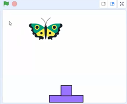

ニンジャ６名とメンター４名が参加しました。みんなで一緒にゲームを作りながら、プログラミングを学習してまいります。
CoderDojoに初めて参加してくれたニンジャは、なんと３名も！メンター一同、とても喜んでおります。
オンラインだけど子ども同士の会話をしてもらいたく、みんなでプログラミング（モブプロ）をやってみました。「アニメーションする１つの雪だるまを、５個に増やしたい」というテーマ。旗を押した時、何をすればいいか、みんなでアイディア出しをしてもらいました。そして実際にScratchでコードを組んでみて動作検証。１回目は複製するX座標の間隔が5だったので雪だるまが５個とも重なってしまったので、X座標を変えてみるなど色々試しました。
前回に引き続きゲームの製作を、いっぱい自分で考えて、試してみて、段々と進化させていきます。
完成した作品はこちら。宇宙空間に鮮やかなイルミネーション風のインベーダーがとってもクールですね～。思いもよらないアートに感動しました。
次の作品はこちら。で、でかいっ。そして、なんだか強そう！ こちらも意外性に驚かされますね！ とっても楽しい。
３つめの作品。前月制作したゲームを元にして、クリアした時の画面を追加したり、討伐者(プレーヤー名)を表示したり、ゲームをアップグレードしてくれました。
Scratchの経験はある、との事なのでどんなの作れるのか聞いたら「じゃあ何か作ってみる」とテキパキと制作開始。宇宙鳥のピンポンゲーム。トリさんを打ち返すと得点が加わる。失敗して赤い線に触れると「コケコッコー」と鳴いてゲームオーバー。ピンポン玉でなく鳥な理由は好きだから「コケッ」。
もう１名はScratch未経験。前半はScratch操作方法をレクチャーして、チョウチョ(🦋)を当てるゲームを制作しました。初めての制作、おめでとう！

オンラインでしか開催できていませんが、早く会場でみんなと遊びたいです。一部のメンターがワクチン接種始まっていますので、秋ごろ目標に会場開催を準備します。それまではオンラインですが、また８月のイベントに来てねー！！